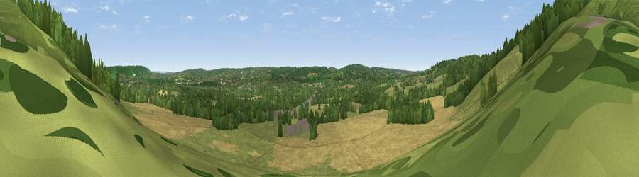

Viewpoint near Chevening
#31732 in England · top 20% of its area beats it · near CheveningWhere it is
The exact computed spot (TQ 49469 58407). Click the marker for map links.
The view, rendered

A 360° render of this exact spot computed from the terrain model, tree cover and land cover — summer colours, afternoon light, calibrated against photographs of famous viewpoints. Real trees, hedges and buildings will differ in detail.
The panorama
Grey silhouette: terrain skyline in each direction (720 bearings, Earth curvature and refraction included). Dashed green: skyline with trees (+15 m) and buildings (+8 m) as obstacles. Blue strip: how far the ground is visible on each bearing.
Where the view opens
Wedge length = distance to the farthest visible ground on that bearing (vegetation-aware). Rings at 10, 25 and 50 km.
What fills the view
36% cropland · 35% grassland · 24% woodland · 4% built-up
Angular shares of the visible panorama (visual magnitude), not map area. Landscape diversity 0.53 (0–1 Shannon).
Key numbers
More beautiful places nearby
The staircase of upgrades: each row has a higher view potential than everything closer. Driving times are estimates from straight-line distance, calibrated against real road routing — check an actual route before setting out.
| Place | Direction | Drive | Score |
|---|---|---|---|
| Viewpoint near Knockholt | WSW · 3 km | ~8 min | 39.0 |
| Viewpoint near Brasted | WSW · 4 km | ~9 min | 42.6 |
| Viewpoint near Westerham | WSW · 6 km | ~13 min | 43.5 |
| Viewpoint near Ide Hill | S · 7 km | ~14 min | 51.8 |
| Viewpoint near Ide Hill | S · 7 km | ~14 min | 62.7 |
| Viewpoint near French Street | SSW · 8 km | ~15 min | 64.5 |
| Viewpoint near Shipbourne | SE · 9 km | ~18 min | 66.2 |
| Viewpoint near Lower Kingswood | WSW · 26 km | ~42 min | 67.7 |
51.30516, 0.14286 · source: osm viewpoint · position refined by local search. Computed location — check access rights before visiting.